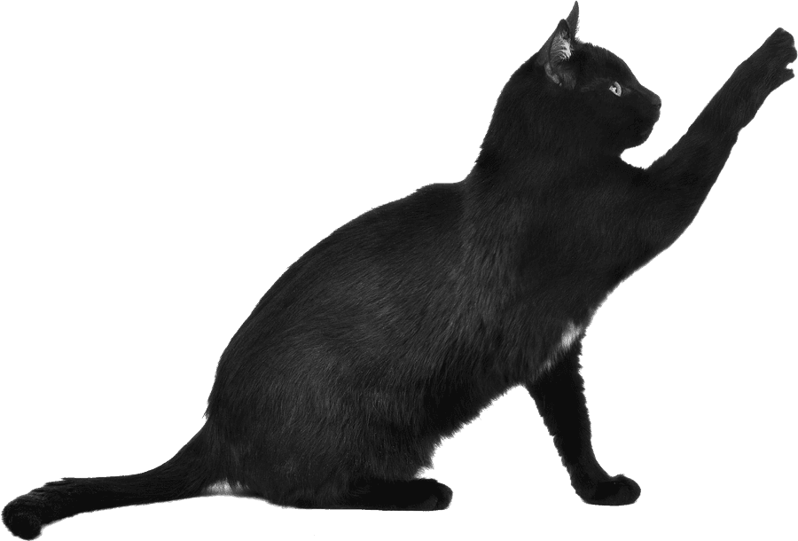

Era uma vez um gatinho chamado Felix, que vivia confortavelmente em uma casa aconchegante, Todos os dias, ele passava o tempo enrolado no sofá, observando os pássaros pela janela.


Felix se escondeu entre as plantas e começou a observar seus movimentos.
Um cachorro latindo chama mais a atençao do gatinho Felix.
Os passarinhos escapam voando, e Felix volta para casa, tirar uma soneca apos seus esforços.
Felix aprende e decora seus movimentos.
Felix acaba dormindo derrotado, e decidi fazer diferente amanhã.